1과목: 암석학 및 광물학
1. 초변성작용을 받은 기존 암석이 선택적으로 재용융하여 생긴 액체와 고체의 혼합물을 무엇이라 하는가?
2. 화성암의 화학성분을 비교하였을 때, 일반적으로 SiO2가 증가함에 따라 함께 증가하는 성분은?
3. 화성암의 분류 기준이 되기에 가장 부적합한 것은?
4. 다음 중 지질 시대의 유체의 이동 방향과 퇴적물의 기원지를 알 수 있는 고수류 연구에 주요 대상인 퇴적 구조는?
5. 다음 중 가장 고온의 환경에서 형성된 변성상은?
6. 섬장암과 섬록암 사이의 중간적인 조성을 가진 심성암으로서 거의 같은 양의 정장석과 사장석을 포함하며 회백색의 조립·등립질인 암석은?
7. 다음 중 쇄설성 퇴적암에 속하지 않는 것은?
8. 다음 중 점성이 가장 큰 마그마는?
9. 파쇄변성작용의 증거가 될 수 없는 암석은?
10. 다음 중 변성 상평형도에 대한 설명으로 옳지 않은 것은?
11. 다음 중 정육면체 결정의 대칭 표기를 바르게 나타낸 것은?
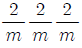
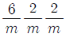
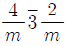
12. X선 회절을 공식화한 Bragg 방정식에서 파장과 회절각을 알면 무엇을 알 수 있는가?
13. 미지의 광물에 대해 정량정성분석을 통하여 구리(Cu)가 34.5wt.%, 철(Fe)이 30.5wt.%, 황(S)이 35.0wt.%의 값을 얻었다. 이 광물은 무엇인가? [단, Cu의 원자량 : 63.5, Fe의 원자량 : 55.8, S의 원자량 : 32.0 이다.]
14. 다음에서 설명하는 광물은 무엇인가?
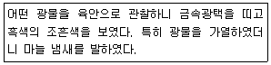
15. 광물의 결정면에 염산이나 불산과 같은 시약을 사용하면 식상(etch figure)이 나타나는데, 식상의 형태를 보고 알 수 있는 것은?
16. 주기율표에 있어서 각 주기의 첫째 자리, 즉 Ⅰa족에 속하는 원소들로서 Li, Na, K, Rb, Cs, Fr 등이며, 화합물에서는 원자가가 +1 이다. 일반적으로 열과 전기에 대하여 전도성이 높고, 금속광택, 낮은 경도, 전성, 연성 등이 특징인 원소들을 무엇이라 부르는가?
17. 다음 중 쪼개짐(벽개:Cleavage)이 십이면체상으로 잘 발달되는 광물은?
18. 다음 중 흔히 누대상 결정(zoned crystal) 구조를 보여주는 광물은?
19. 다음 중 완전고용체(연속고용체)에 속하는 광물은?
20. 다음 중 광물의 초전기(pyroelectricity) 현상에서 알 수 있는 것은?
2과목: 구조지질학
21. 규암층(짙은 부분)의 지질도를 작성하여 얻은 지질분포도이다. 설명이 맞는 것은?
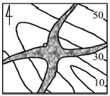
22. 다음 그림은 하나의 배사구조를 형성하는 지형의 층리를 측정하여 입체투영(stereographic projection)한 것이다. 배사축의 선주향(trend)과 선경사(plunge)로 맞는 것은? [단, 층리면은 하반구에 π-diagram으로 표시함]
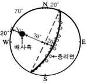
23. 고토양(paleosols)을 이용하여 해석할 수 없는 것은?
24. 모든 지각과 최상부 맨틀을 포함하는 지구의 가장 바깥층은?
25. 부정합면 아래에 결정질인 암석(심성암, 변성암)이 있는 부정합을 무엇이라 하는가?
26. 다음의 설명에 해당하는 판의 경계부는?
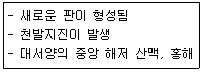
27. 다음 그림과 같은 단층구조에서 인장절리가 en echelon array로 발달하였다면 이 경우를 변형도 타원(strain ellipse)으로 설명한 것 중 맞는 것은?
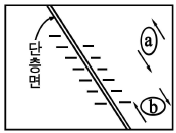
28. 대륙지각과 해양지각에 대한 설명으로 옳지 않은 것은?
29. 화석은 과거에 살았던 동·식물의 유해나 흔적을 말한다. 다음 중 화석이 가지는 의의로서 옳지 않은 것은?
30. 다음 중 카르스트 지형과 가장 관계가 깊은 암석은?
31. 리히터 규모 4인 지진은 리히터 규모 2인 지진보다 얼마나 에너지가 큰가?
32. 다음 중 섭입지대와 관련 암판의 연결이 잘못된 것은 무엇인가?
33. 드러스트 단층에 대한 설명으로 옳지 않은 것은?
34. 다음 그림과 같이 좌수향의 주향이동운동이 작용할 때 Ⓐ 구역에서 가장 잘 형성될 수 있는 지질구조는?
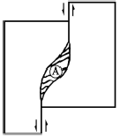
35. 다음 중 변형기작이 다른 하나는 무엇인가?
36. 다음 중 정수압(hydrostatic pressure) 상태를 나타내는 모어 다이아그램(Mohe diagram, 2차원)은? [단, σn : 수직응력[x축], σs : 전단응력[y축]]
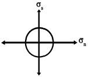
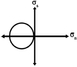
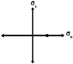
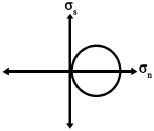
37. 해령(대양저 산맥)에서 500km 떨어진 곳에서 시추한 용암의 K-Ar 연령이 약 900만 년이다. 판구조운동의 속도가 일정하다고 가정했을 때 해저확장속도는?
38. 판구조론에 입각한 조산운동론에 의하면 히말라야산맥의 생성원인은 어느 것인가?
39. 대동층군의 퇴적 이후에 발생한 지질학적 사건은?
40. 다음 중 빙하의 이동과 관련하여 형성된 지형은?
3과목: 탐사공학
41. 다음 중 중력탐사 결과를 해석할 때 양의 중력이상을 나타내는 지질구조는?
42. 지하투과 레이다 탐사(GPR)에서 반사계수는 다음 중 어느 물성과 관련이 있는가?
43. 굴절법과 비교한 반사법 탄성파탐사의 장점으로 옳지 않은 것은?
44. 굴절법 탄성파탐사에서 아래 그림과 같은 주시 곡선을 얻었다. 수평 2층 지하구조라는 가정 아래 상부층의 두께를 구하면 얼마인가?
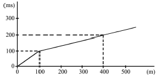
45. 다음 중 심부 지열원의 부존을 확인할 수 있는 가장 유망한 물리탐사법은?
46. 고분해능 탄성파 탐사 단면도에서 관찰되는 천부의 가스 축적 유형에 해당하지 않는 것은?
47. 다음 중 큐리 심도(Curie depth)에 대한 설명으로 맞는 것은?
48. 댐이나 제방의 누수를 탐지하기 위해 자연전위탐사를 실시한다고 하면, 이 때 주로 측정되는 자연전위는 무엇인가?
49. 탄성파 탐사에서 횡파의 전파속도(Vs)에 대한 관계식으로 맞는 것은? [단, G : 강성률, ρ : 밀도, E : 영률, ν : 포아송비, k : 체적탄성률)
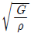
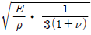
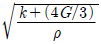
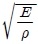
50. 토양단면의 일반적인 구분에 따른 토양층 중 점토, 산화철 등이 집적되어 다른 층보다 진한 색을 띠며, 미량원소들이 농축되는 경우가 많아 지구화학탐사의 대상이 되는 층은?
51. 다음의 중력탐사 자료 보정 방법 중 고도(elevation)와 관련이 없는 보정은?
52. 발파점이 수중 또는 지표면 아래에 위치하는 경우 에너지의 일부가 올라와 표면에 반사되어 나타나는 것은?
53. 25개의 트레이스를 이용하여 CDP 중합을 했을 경우 신호 대 잡음비는 몇 배 향상되는가?
54. 다음 중 얇은 지층의 경계를 가장 명확하게 나타내는 검층법은?
55. 대륙 이동설과 해양저 확장설을 근간으로 하는 판구조론을 설명하는데 정량적인 증거를 제시하는 고지자기학에서 매우 중요하며, 특히 화성암류가 형성될 당시의 지자기장의 방향을 알아내는데 가장 널리 이용되는 자연 잔류자기는?
56. 유도분극탐사(IP)에서 두 개 주파수에 대한 암석의 전기비저항이 다음과 같을 때 금속계수(Metal Factor)는? [단, 0.1Hz 부근의 직류전류를 사용했을 때의 암석의 전기비저항 110Ω-m, 10Hz 부근의 교류전류를 사용했을 때의 암석의 전기비저항 100Ω-m]
57. 핵자력계(proton free-precession magnetometer)에 대한 설명으로 옳지 않은 것은?
58. 반사법 탄성파탐사 기록에서 직접파, 굴절파 등의 잡음이 나타나는 부분이나 NMO보정 후에 파형이 심하게 늘어난 부분을 제거하는 작업은?
59. 물리검층으로 구한 유정의 검층자료로부터 저류가능 지층을 판별하기 위해 필요한 정보가 아닌 것은?
60. 원소들의 분산이 일어나는 지구화학적 환경 중 1차 환경에 대한 설명으로 옳지 않은 것은?
4과목: 지질공학
61. 다음 그림과 같은 옹벽의 단위 폭당 Rankine의 주동토압(active earth pressure)은 얼마인가? [단, 흙의 단위중량 16kN/m3, 내부마찰각 30°, 점착력 0 이다.]
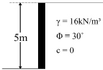
62. 원위치시험은 사운딩(sounding)과 특성시험으로 구분할 수 있다. 다음 중 특성시험에 속하지 않는 것은 어느 것인가?
63. 통일분류법에 의한 흙의 분류에서 분류기호 SM의 대표명으로 맞는 것은?
64. 다음 중 점하중강도시험(Point load strength test)에 대한 설명으로 옳지 않은 것은?
65. 주절리 방향이 존재하지 않는 불연속면의 분포가 매우 심하게 발달된 암반에서 일어날 수 있는 사면파괴 유형은?
66. 다른 암석에 비해 비교적 전도파괴(toppling failure)가 가장 흔하게 발생되는 지질구조를 가진 암석은?
67. 지진파의 기록으로부터 지진계와 진원사이의 거리를 획득할 수 있는 요소는 무엇인가?
68. 다음 중 절리의 성인에 따른 설명으로 옳지 않은 것은?
69. 지하공동 시공을 위한 지질조사 시 각 단계에 따른 조사 방법으로 옳지 않은 것은?
70. 어떤 지반의 투수계수를 측정하기 위하여 시험우물을 파고 400cm3/min를 양수하였더니, 시험우물로부터 20m, 30m 떨어진 설치한 관측 파이프의 수위가 각각 h1 = 12.1m, h2 = 15.1m일 때 정상 상태가 되었다. 이 지반이 자유면 대수층이라면 투수계수는 얼마인가?
71. 다음 중 일반적으로 공극률이 가장 큰 암석은?
72. 지하수의 분포 중 통기대에 속하지 않는 것은?
73. 다음 중 Q-system의 값을 산정하는 식에 사용된 항목에 대한 설명으로 맞는 것은?
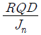
: 블록의 크기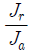
: 블록간의 압축강도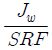
: 지하수 상태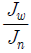
: 블록간의 전단강도74. 흙의 연경도에 대한 설명으로 옳지 않은 것은?
75. 암반분류법인 RMR 분류법의 분류요소에 해당되지 않는 것은?
76. 다음의 지반개량 공법 중 고결의 원리를 이용한 것은?
77. 지하수위가 지표면과 일치되며 내부마찰각 40°, 포화밀도 2.0t/m3인 비점성토로 된 반무한 사면이 30°로 경사져 있다. 이 때 사면의 안전율은 얼마인가? [단, 점착력 c = 0]
78. 다음 중 피압 대수층에 해당하는 것은?
79. 다음에서 설명하는 현상은?
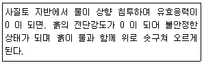
80. 다음 중 시추공내에서 시행되는 원위치시험법이 아닌 것은?
5과목: 광상학
81. 다음 중 퇴적광상의 특징에 대한 설명으로 옳지 않은 것은?
82. 다음 그림은 화성광상 생성과정 중의 온도와 증기압과의 관계를 나타낸다. 그림 중 기성광상 단계의 영역은?
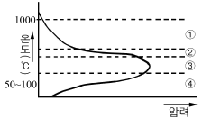
83. 다음 중 우리나라의 동(Cu) 광상구의 대표적인 지역은?
84. 다음 중 우리나라 납석광상에 대한 설명으로 맞는 것은?
85. 제노서말(xenothermal) 광상에 대한 설명으로 맞는 것은?
86. 다음 중 열수광상에서의 모암 변질로 맞는 것은?
87. 우리나라에서 함티탄 자철석이 산출되는 광상은?
88. 우리나라의 주요 광상 중 각력파이프형 동-중석 광상에 해당하는 것은?
89. 시멘트, 용광로의 용재, 칼슘바이드 제조에 사용되는 광물은?
90. 강원도 양양 철광상에서 가장 많이 산출되는 광석광물은?
91. 다음 중 광상의 생성온도를 측정하는데 사용하는 지질온도계와 가장 거리가 먼 것은?
92. 표성부화광상의 지하수면 아래 환원대에서 산출되는 광물은?
93. 광상에서 광체가 많이 모여 있는 부분을 흔히 가리키는 용어로서 불연속적으로 광체가 많이 모여 있는 것을 나타내는 것은?
94. 다음 중 열수유체로부터 광석광물의 침전이 일어나는 원인으로 옳지 않은 것은?
95. 다음 중 경상분지의 주된 광화작용의 시기는?
96. 각력암 등 파쇄암의 공동 내에서 열수 광화작용이 일어날 경우 모암편이 방사상의 광물 결정들에 의하여 피복되어 나타나는 구조는?
97. 철광상의 산출형태 중 세계적으로 가장 많은 철광석을 공급하는 것은?
98. 정마그마 광상에서 산출되는 금속광물이 아닌 것은?
99. 변질대에서 일어나는 반응 중 규산염광물로의 변환작용이나 규산염광물에 의한 교대작용을 의미하는 것은?
100. 다음 중 열극이 잘 발달한 모암에 열수가 유입될 경우 일반적으로 만들어지는 광상의 형태는?